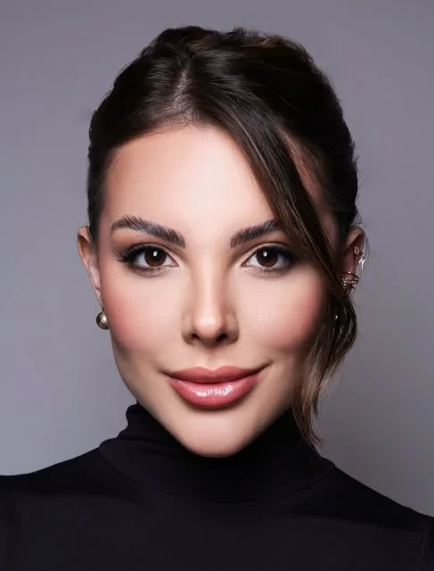
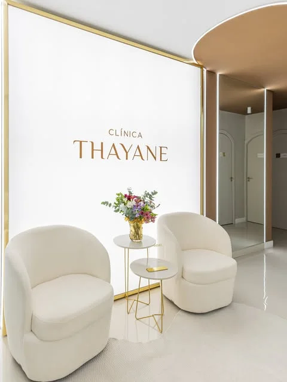

Harmonização facial · Tubarão, SC
Thayane Corrêa
Harmonização facial e rejuvenescimento em Tubarão, com avaliação individual do rosto.
Dra. Thayane Corrêa · CROSC/21.506 (conforme o perfil, a confirmar)

- 32,4 milseguem @dra.thayanecorrea
(consultado em 20/10/2026) - Tubarão, SCClínica Thayane
(endereço a confirmar)

A clínica
Um espaço de portas arqueadas e voz baixa.
A Clínica Thayane tem letreiro dourado, poltronas brancas e portas em arco. A página parte desses elementos reais.
A avaliação começa por uma conversa sobre o que incomoda e o que você quer preservar. (Texto de exemplo, a validar com a Dra.)
- Onde
- Tubarão, SC (endereço a confirmar)
- Quem
- Dra. Thayane Corrêa, fundadora
- Contato
- WhatsApp da clínica
Como o rosto é lido
O rosto em três terços.
Desde o Renascimento, o rosto é estudado em três faixas. Aqui elas servem de mapa para a conversa: um guia de leitura, não uma regra a cumprir.
-
I
Terço superior
Testa e olhar
Linhas de expressão, posição das sobrancelhas e a moldura do olhar.
-
II
Terço médio
Maçãs e centro do rosto
Volume, sustentação e a passagem entre o olhar e o sorriso.
-
III
Terço inferior
Sorriso, contorno e queixo
Lábios, mandíbula e a relação do queixo com o restante do rosto.
- Pontos de conversa de exemplo. Nada aqui é indicação de procedimento nem promessa de resultado; o que faz sentido para cada pessoa é definido na avaliação.
Três portas de entrada
Cada momento pede uma conversa diferente.
-
01
Rejuvenescimento
Para quem quer conversar sobre os sinais de idade no rosto, partindo do que deseja preservar.
Conversar sobre isso -
02
Para eles
Atendimento voltado ao rosto masculino, tema de um dos destaques do perfil.
Conversar sobre isso -
03
Noivado
Para quem tem uma data marcada: conte o dia da cerimônia já na primeira mensagem.
Conversar sobre isso
Dúvidas
Antes de escrever, leia isto.
Perguntas e respostas de exemplo, para validar com a Dra.
Como funciona a primeira avaliação?
Você conta o que incomoda e o que gostaria de manter. A Dra. observa o rosto em conjunto e explica as possibilidades, inclusive a de não fazer nada por enquanto.
Preciso saber qual procedimento quero?
Não. Você chega com a queixa; o caminho é desenhado na avaliação.
Homens também são atendidos?
Sim. O perfil da Dra. mantém um destaque dedicado ao atendimento masculino.
Tenho um evento marcado. Quando devo agendar?
Informe a data já na primeira mensagem. A equipe orienta o melhor momento para cada caso.
Onde fica a clínica?
Em Tubarão, SC. O endereço completo será confirmado com a clínica antes de a página ser publicada.
Avaliação
Vamos conversar
sobre o seu rosto?
Mande uma mensagem pelo WhatsApp para pedir um horário de avaliação.
Olá! Vim pelo site e gostaria de agendar uma avaliação com a Dra. Thayane.
WhatsApp a confirmar com a clínica.